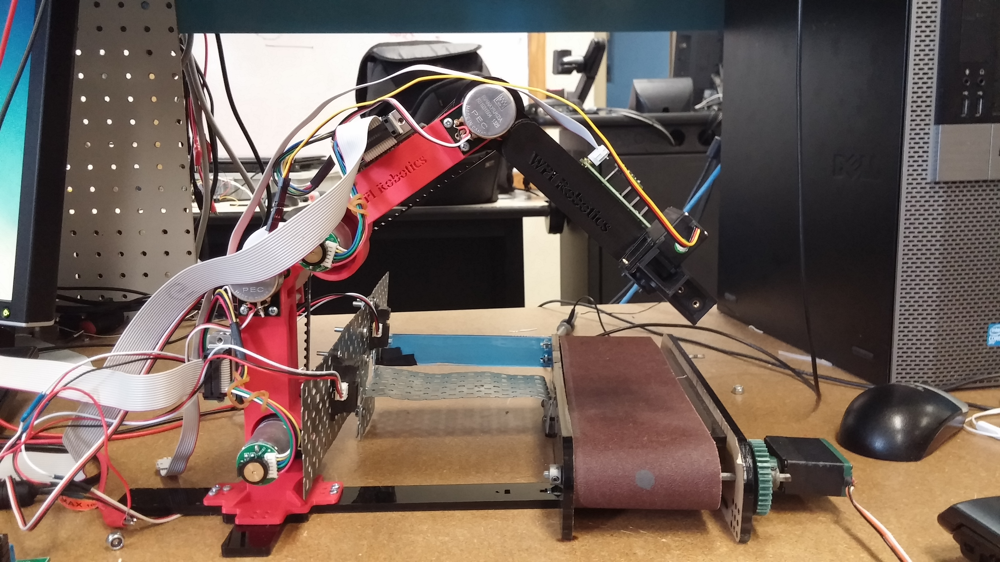

Automated Production Line 1-3/2015
The arm is made of 3D-printed plastic and a couple of Pololu motors, with potentiometers and encoders for joint angle feedback and a standard gripper assembly for picking up blocks. The blocks are detected with a pair of IR sensors mounted near the conveyor belt; some inverse kinematics later and they're grabbed by the arm. Weighing is a simple matter of looking at the step response of the arm to a small voltage. Some more inverse kinematics and the arm drops the block in the appropriate area.
I also made a nice MATLAB interface for plotting data from the arm in real-time, drawing a live stick-model of the robot, and sending it commands to move the arm to a specified location with a click. The data is streamed back from the arm over a serial connection, and the robot listens simultaneously listens for incoming commands over the same line.
Grasping via handle detection9-10/2014
SLAM on the Neato robot8/2014
After discovering that Neato robot vacuum cleaners have fully functioning scanning LIDAR sensors and an available USB interface for getting all of that data, I wrote up some ROS drivers for it (then discovered someone else had done it already), hooked it up to some localization and mapping packages, and tweaked them for the robot's dimensions. Essentially, I've got a $200 TurtleBot. Maybe its turning isn't quite as precise, but it's also not $2000.
Since a tethered robot isn't much fun, I hooked it up with Raspberry Pi and a battery in the dust-bin area to act as its brain, and used the Pi Camera for a live video feed. With this setup, I could access the Pi remotely over the internet from anywhere, give commands to drive the robot, and view the live video. Next steps could be:
- Hook up to Pi to the robot's internal battery, so that it could charge itself from the charging station
- Make a web-interface for the remote connection
- Give it some autonomy to patrol the house
Force control with series-elastic actuators3-5/2014
The robot was built almost entirely out of laser-cut acrylic pieces, and engraved with its nickname "2-CHAINZ" in honor of the two chain-and-sprocket mechanisms that supplied power to the actuator. Force control was done using a typical linear series-elastic setup: two acrylic plates slid on four connecting rails, with springs sandwiched between them. A linear potentiometer connected to both parts provided the distance between them, and hence the applied force. The motor driving the back plate was controlled with a PID loop that maintained the actuator at a constant pressure.
To actually erase, we made the eraser actuator spin using a "Multiple Gearing" mechanism, which uses grooves, sliding pins, and an axle-less gear to accomplish essentially the same thing as an ordinary gear pair. Why? It was fun to design and build. As far as we could tell, there is no good reason to ever use this mechanism in any application.
Mock reactor maintenance robot1-3/2014
DARPA Robotics Challenge1-4/2014
Soft Robotic Gripper 10-12/2013
Localization of self-driving cars5-7/2015
A new sensor was developed at Lincoln Lab, called "Localizing Ground Penetrating Radar". In essence, it is a radar array mounted to the underside of a vehicle. As the car drives, the radar maps out the road's subsurface features, capturing man-made objects like pipes along with rocks and soil of different denisites. The result is a 3D voxel grid of sensor readings along the vehicles path, aproximately as wide as the vehicle itself and 2-3 meters deep. Once the map is built, it can later be used to localize the car with amazing accuracy even at highway speeds.
Packbot LIDAR navigation5-6/2014
At MIT Lincoln Lab, I worked on developing autonomous driving capability for the Packbot. Using a scanning LIDAR sensor mounted to the Packbot's base as the primary sensor, I was able to perform SLAM to generate maps and use them for motion-planning while avoiding obstacles.
The Packbot used two onboard computers; one was in charge of low-level functions such as motor and arm control, while the other ran and performed high-level tasks such as motion planning. A ROS node I wrote took care of two-way communication between the two computers. The navigator computer also took input over Bluetooth from a gamepad, and communicated with an external controller laptop over WiFi.
While working on this project I had a chance to give a short talk and demo of the Packbot to a group from MIT's MITES program, which was also fun.
LandShark GPS-INS navigation6-7/2014
Autonomous quadrotor localization7/2014
Telepresence1-6/2011
Working at UMass Lowell's robotics lab, I was involved in developing autonomous capability for several telepresense robots. Using the ATRV-Jr rover as a platform, I investigated ways to allow it to be used as a "smart" telepresence robot. If you're being represented at a location by a telepresense robot, you don't want to be focusing all of your attention on driving the robot; you want to be interacting with people naturally. One of the goals behind this work was to be able to walk alongside a telepresense robot, having a natural conversation with the person on the other end, while the robot handled driving alongside you autonomously. To do this, I integrated a vector field histogram navigation algorithm on the robot for obstacle avoidance while having it follow what it saw as a "target person". At first, this was done using the Hokuyo scanning LIDAR sensor on the front of the robot; the legs of the target were visible to the robot where they intersected the LIDAR beam. Later, a thermal camera on a pan-tilt mechanism was used to detect the target's heat signature, which was a more robust way to keep track of the target.
Besides this main one, there were a couple of related projects I worked on. For the lab's VGo telepresence robot, I developed drivers to use the custom magnetic encoders on its wheels to get odometry for dead-reckoning navigation. I also created some logging utilities for use in the lab's experiments in trust between robots and their operators.